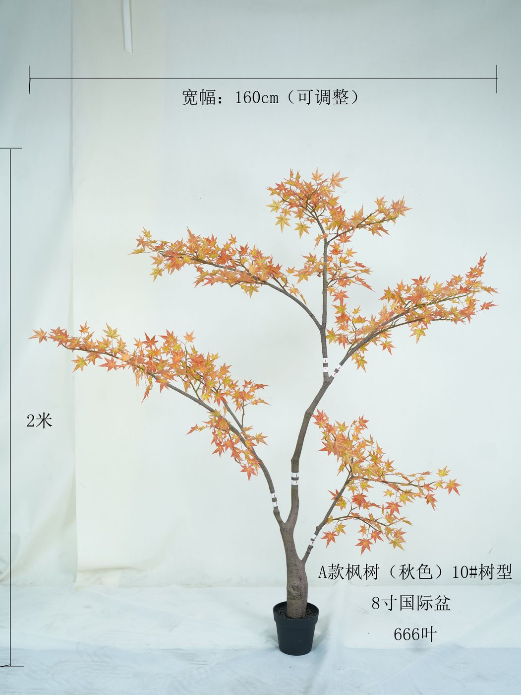
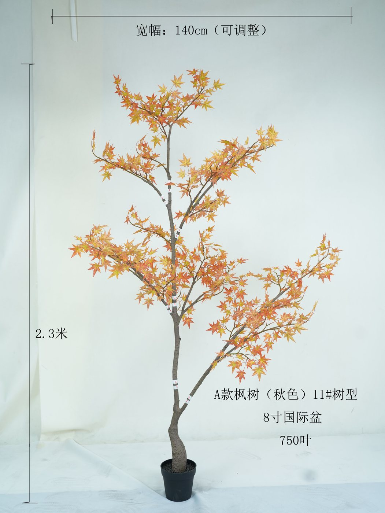

Foliage & Shrubs
Autumn-Color Maple
Autumn-Color Maple is a versatile greenery piece for retail displays, offices, and mixed plantings. Photos show the actual product; exact dimensions, packing, MOQ, lead time and price are confirmed by the seller on inquiry.
Opens your email application; sending happens there.
Product information
Autumn-Color Maple is a versatile greenery piece for retail displays, offices, and mixed plantings. Photos show the actual product; exact dimensions, packing, MOQ, lead time and price are confirmed by the seller on inquiry.
Specifications
| Product code | LC-N080 |
|---|